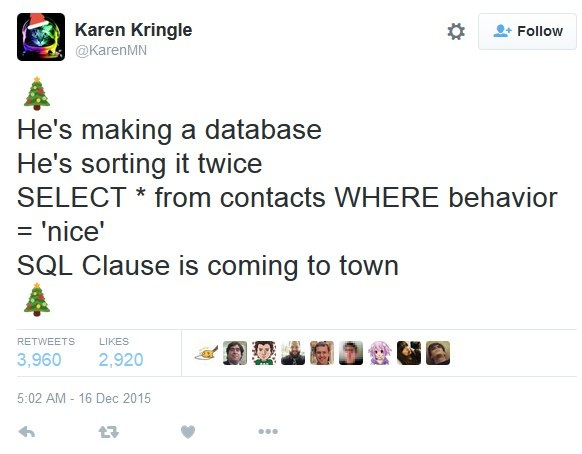

You can click here to get the stencil code for Homework 1. Reference this guide for more information about Github and Github Classroom.
The data is located in the data folder. To ensure compatibility with the autograder, you should not modify the stencil unless instructed otherwise. For this assignment, please write each of your queries to its corresponding SQL file. Failing to do so may hinder with the autograder and result in a low grade.
You need to set up a virtual environment to run Python assignments, if you want to work on your local machine.
Our Gradescope Autograder, virtual environment guide and create_venv.sh script in your stencil code runs on Python 3.7. You might run into strange issues setting up the virtual environment / working on future assignments if you don't have the right version of Python. Please refer to this guide for instructions to check whether you have the right Python version and how to install the correct one if you do not.
You can run ./create_venv.sh (or bash create_venv.sh) from your assignment directory to create the virtual environment. Run chmod 775 create_venv.sh if you get a permission denied error.
If nothing is printed out in your terminal besides the message "created cs1951a environment", congratulations! You have successfully installed the virtual environment for the course on your machine! If any error message is printed out, please utilize TA Hours / Piazza as a resource to resolve the issue(s).
From now on, whenever you want to activate your virtual environment for our assignments, you can simply type the following in your terminal:
cs1951a_venv (or source ~/cs1951a_venv/bin/activate).source /course/cs1951a/venv/bin/activateYou can refer to this guide for more information about installing our course's virtual environment.
If you have successfully executed our create_venv.sh script above and have the right Python version, you should not worry about reading in-depth into this resource.
If you use a Windows machine, as there are different ways students use Terminal/File Transfer to complete assignments, we unfortunately do not have a robust, uniform script/guide to install a virtual environment locally on Windows machines.
We strongly recommend running your assignment on the department machine. Git is installed on the department machines, so you should also be able to git clone your assignments onto the department machine.
The recommended workflow is to work on your assignment locally, and either (1) use version control, or (2) use SCP/PuTTY to transfer your files to the department machine. To run your assignments on the department machine, make sure to enable the course virtual environment (using source /course/cs1951a/venv/bin/activate) before running any Python code! Refer to this resource for more support regarding file transfer, and this with respect to version control.
If you have successfully installed a Python3.7 Virtual Environment on your machine in the past: We have included the requirements.txt dependencies file on the course website (here). If it is helpful, we also have a virtual environment setup guide here.
If you are working locally, you can check if SQLite is installed already by running sqlite3 -version in your terminal.
You can refer to this guide to install SQLite on your machine.
SQLite is installed on all department machines. It can be accessed from the command line using sqlite3.
Running sqlite3 somedb.db from your terminal will launch an environment that will allow you to type your SQL queries directly into the terminal. You can exit this environment by pushing Ctrl+D or by typing .exit and pressing enter.
As a more explicit example, to open a sql environment where you can query the movies.db database, you can type:
$ sqlite3 movies.db
To execute a SQL statement that you have saved in a solution file, you can run the following command:
$ sqlite3 movies.db < sql_solutions.sqlFor more information on using SQLite from the command line, see http://www.sqlite.org/sqlite.html. Additionally, we have provided very helpful hints for most of the problems; you should be able to use these as a starting point if you get stuck before looking up additional information online.
Some useful tools you can use to view the content in a database: SQLite Viewer and SQLTools + SQLite packages (if you are developing on VS Code).
This part of the assignment builds off the exercises you completed in the lab. If you have not yet completed the lab, please do so before starting this assignment. There are some really useful hints and examples you can borrow from the lab for this assignment. The database and schema are described again below, but are the same from the lab.
We have provided a database named people.db with the name, age, ID, and occupation of some Brown students and alumni.
Here is the schema:
people_main(ID INTEGER, name TEXT, occupation TEXT, age INTEGER) people_likes(ID1 INTEGER, ID2 INTEGER) people_friends(ID1 INTEGER, ID2 INTEGER)
In the people_main table, ID is a unique identifier for a particular student or alumni. name, occupation and age correspond to the person's first name, occupation and age.
In the people_friends table, each (ID1, ID2) pair indicates that the particular person with ID1 is friends with the person with ID2 (and vice versa). The friendship is mutual, and if (ID1, ID2) is in the table, it is guaranteed that (ID2, ID1) exists in the table.
In the people_likes table, each (ID1, ID2) pair indicates that the student or alumni with ID1 likes the person with ID2. The (ID1, ID2) pair in the table does not guarantee that the (ID2, ID1) pair also exists in the table.
Your job is to write SQL queries for the data being requested:
part1_problem1.sql
Hint: Use a LEFT JOIN! The following website is quite useful: http://blog.codinghorror.com/a-visual-explanation-of-sql-joins/
part1_problem2.sql
Hint: The LIMIT statement will come in handy!
part1_problem3.sql
Hint: You'll need to take a look at the HAVING function.
part1_problem4.sql.
part1_problem5.sql
Time to join stuff!
For this part of the assignment, you will be using the TMDB Movie Dataset, which has been exported to the movies.db database. The database
schema is as follows:
movies(budget INTEGER, homepage TEXT, id INTEGER, original_language TEXT, original_title TEXT, overview TEXT, popularity REAL, release_date TEXT, revenue REAL, runtime INTEGER, status TEXT, tagline TEXT, title TEXT, vote_average REAL, vote_count INTEGER) scores(review TEXT, min_score INTEGER, max_score INTEGER)
We encourage you to use the WITH operator, which lets you divide your query into separate queries. As an example, we can define a subquery and
use it in another query as follows (there is also an example in the lab!):
WITH subquery AS ( SELECT original_title, vote_average FROM movies ) SELECT original_title FROM subquery );
You can add days to a particular day
by using the date function.
For example, in order to add 3 days to to '2012-07-16', you can use date('2012-07-16', '+3 days')
Hint: The UNION statement should come in handy.
Hint: You may want to look into CASE statements and the LIKE operator. (Lab!)
Hint: You may want to look into the EXISTS operator. Additionally, think about possible edge cases.
scores table. For example, movies with a vote average between 2 and 3.9 (inclusive) are reviewed as 'poor',
whereas movies with a vote average between 9 and 10 (inclusive) are reviewed as 'excellent'.
If a movie is reviewed as 'awful' or 'poor' then original_title should read 'do not watch'.
Results should be ordered by id (ascending).
For example, the output should have the following format:
'Snow White' | 8.7 | 'great' 'Toy Story' | 9.3 | 'must see' 'do not watch' | 2.3 | 'poor'
Hint: Look into the BETWEEN statement and how it can be used in a join.
Another Hint: Do not modify the current database by using UPDATE. Take a look at the CASE operation example from the lab.
(10 points) Write a SQL query that, for each original_language that has more than 2 movies , finds the number of movies that were reviewed as 'poor' and the number of movies that were reviewed as 'good'.
Like in the 4th question, you will need to look at the scores table to see what the review categories are and use the vote_average field of a movie to determine which review category it falls under.
Your query should return 3 columns (original_language, num_poor which is the number of 'poor' movies for that language, and num_good which should be the number of 'good' movies for the language).
Your results should be ordered by number of 'good' movies (descending) and then number of 'poor' movies (ascending). Remember to only include languages that have more than 2 movies!
Hint: Refer to the examples from the lab!
We have provided you with the athletes.db database, although querying it is not necessary at all. The schema is as follows:
school_athletes(ID INTEGER, name TEXT, school TEXT, performance_score INTEGER, division TEXT)
For the query below, explain why the given query might not be the most efficient way to accomplish the task. Write out an optimized version of the query in writeup.txt. Explain what steps you took to optimize it and why your version would be more efficient.
(6 points) The SQL query to optimize is as follows:
SELECT ID, name
FROM school_athletes AS athletes
WHERE school = 'Brown' and performance_score > (
SELECT AVG(performance_score)
FROM school_athletes
WHERE division = athletes.division
); (4 points) Consider two tables. Table A is very long with 1 billion rows and 5 columns. Table B is very wide with 1000 rows and 10,000 columns. If we were to join the two tables and want to make sure the join is performant, how should we best filter the tables? Assume that we can select from each table and then join the results. Specifically, state the table in which we should use WHERE heavily and the table in which we should be careful about what values we use in our SELECT.
CS1951a wants to help you identify and grapple with societal consequences at each stage of the data lifecycle.
The design, construction, and socio-historical context of a dataset have social implications that data scientists
must consider when creating and using it.
The goal of this section is to:
writeup.txt. Each response should be thoughtful, provide justification for your
claims, and be concise but complete. See the response guide for more guidance.
Timnit Gebru, the creator of Datasheets for Datasets, is a leader in the field of AI ethics and an advocate for marginalized and underrepresented communities in tech. On December 2nd, Google fired her from her role as co-lead of the company's Ethical Artificial Intelligence team. Gebru said she was fired for sending an email criticizing Google's treatment of marginalized employees. Google's treatment of Gebru has been widely criticized by those within and outside of the tech community, and has sparked discussions about racism in the tech industry, industry censorship of critical research, and corporate diversity efforts. Check out these articles for additional information:
After finishing the assignment (and any assignment in the future), run python3 zip_assignment.py in the command line from your assignment directory, and fix any issues brought up by the script.
After the script has been run successfully, you should find the file sql-submission-1951A.zip in your assignment directory. Please submit this zip file on Gradescope under the respective assignment.
(If you have not signed up for Gradescope already, please refer to this guide.)
Made with ♥ by Jens and Esteban, updated for Spring 2021 by Yuchen, Sunny and Nazem.
The socially responsible computing component was designed by Lena and Gaurav.
Movie Database from: https://www.kaggle.com/tmdb/tmdb-movie-metadata